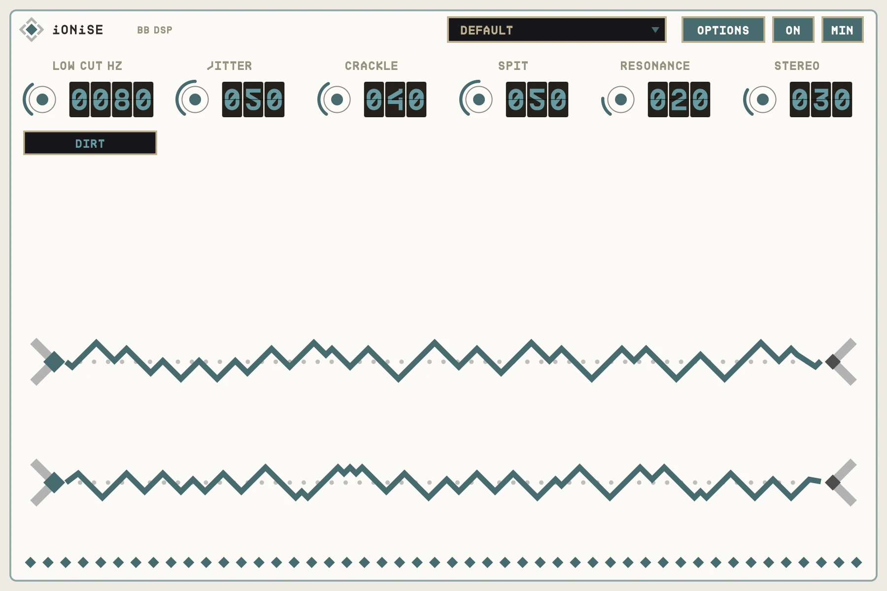
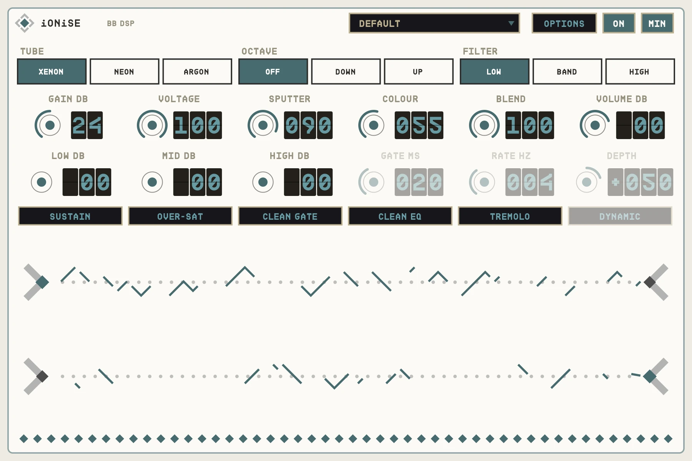

OVERVIEW
iONiSE models a gas discharge tube. The tube stays dark until your signal crosses its strike voltage, then it lights up and holds a constant level until the signal falls back below the hold point. The result is a hard, buzzing, gated fuzz that tracks your dynamics in a way no clipper does.
Every edge is placed to a fraction of a sample, so the fuzz stays free of digital fizz.


QUICK START
- 01Insert iONiSE on drums, bass or guitar.
- 02Raise GAIN until the tube lights on every hit.
- 03Lower VOLTAGE to turn the tube into a gate that passes your signal's shape.
- 04Use BLEND to mix the dry signal back.
HOW IT WORKS
Strike and hold
The tube only lights above the strike level and only goes dark below the hold level, so it buzzes and gates naturally.
Drum friendly
CLEAN GATE, SUSTAIN and a 3-band EQ make it work well on drum buses.
One sample of latency
The dry path is delayed by the same amount, so BLEND never phases.
CONTROLS
Values in the dark wells are the defaults.
MAIN
TUBEXENON / NEON / ARGON
XENON
The voicing of the tube.
GAIN0-48 dB
24
Drive into the tube.
VOLTAGE0-100%
100
Low settings let the signal's shape through, like a gate.
SPUTTER0-100%
30
Randomises the strike level each half-cycle.
COLOUR0-100%
55
Tone of the filter after the tube.
FILTERLOW / BAND / HIGH
LOW
Filter type.
OCTAVEOFF / DOWN / UP
OFF
Adds an octave.
BLEND0-100%
100
Dry against plasma.
VOLUME-36 to +12 dB
0
Output level.
EXTRAS
SUSTAIN / OVER-SATON / OFF
OFF
Longer notes, or even more saturation.
CLEAN GATEON / OFF
OFF
Gates the output, with GATE HOLD time.
EQ LOW / MID / HIGH-12 to +12 dB
0
3-band EQ; CLEAN EQ applies it to the dry too.
TREMOLOON / OFF
OFF
TREM RATE and TREM DEPTH; past 50% it becomes ring mod. Negative depth swings between dry and plasma. DYNAMIC follows your playing.
OPTIONS
JITTER, CRACKLE, SPIT0-100%
Unstable arc behaviour.
RESONANCE0-100%
20
Filter resonance.
STEREO0-100%
30
Left and right tubes behave differently.
LOW CUTHz
80
Cuts lows before the tube.
DIRTON / OFF
OFF
Extra grit.
TIPS
- On drums, short GATE HOLD with SUSTAIN off gives tight, explosive hits.
- OCTAVE UP with SPUTTER at 60% makes a broken-synth lead.
SPECS
- TYPE
- Audio effect (AU aufx), VST3, Standalone
- LATENCY
- 1 sample
- OUTPUT
- Stereo